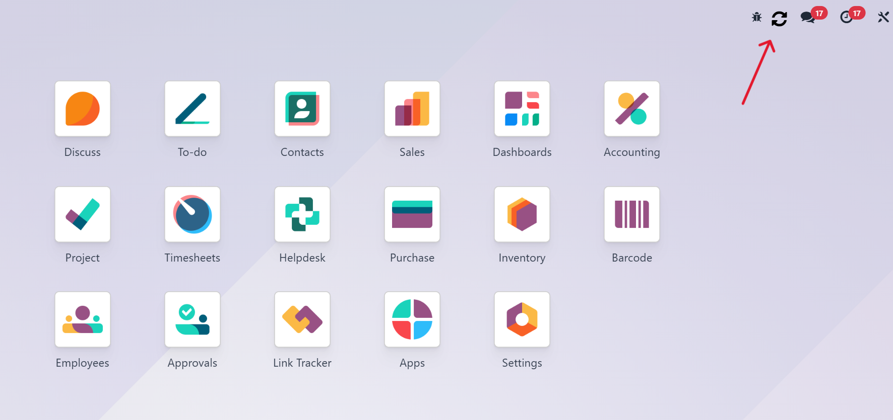

This module adds a refresh button in the Odoo top bar. It's especially useful in mobile views where logging out to reload is inconvenient.
Compatible with Odoo Community & Enterprise Editions.
Just tap the refresh icon to reload your Odoo session instantly!
